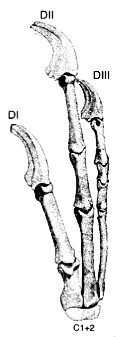
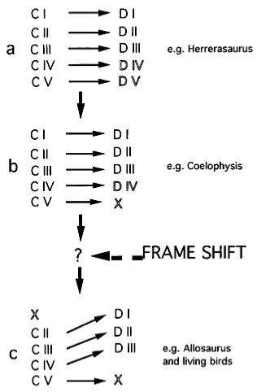

Sarfati's Alleged Problems for Evolution
Answers in Genesis has evolutionary biology on the run now. In an article from 2002, Ostrich eggs break dino-to-bird theory, they explain that development shows that evolution is all wrong, since developmental pathways in different animals are completely different, and can’t possibly be the result of gradual transformations.
The first piece of evidence against evolution is the old avian digit problem. Birds couldn’t have evolved from dinosaurs, because they have the wrong finger order!
The research conclusively showed that only digits two, three and four (corresponding to our index, middle and ring fingers) develop in birds. This contrasts with dinosaur hands that developed from digits one, two and three. Feduccia pointed out:
‘This creates a new problem for those who insist that dinosaurs were ancestors of modern birds. How can a bird hand, for example, with digits two, three and four evolve from a dinosaur hand that has only digits one, two and three? That would be almost impossible.’
The second problem is that frogs and people develop hands in completely different ways, ways that are even more different than the order of the digits.
This is not the only example where superficially homologous structures actually develop in totally different ways. One of the most commonly argued proofs of evolution is the pentadactyl limb pattern, i.e. the five-digit limbs found in amphibians, reptiles, birds and mammals. However, they develop in a completely different manner in amphibians and the other groups. To illustrate, the human embryo develops a thickening on the limb tip called the AER (apical ectodermal ridge), then programmed cell death (apoptosis) divides the AER into five regions that then develop into digits (fingers and toes). By contrast, in frogs, the digits grow outwards from buds as cells divide (see diagram, right).
These seem to be intractable problems, but there is a resolution. It looks to me like Jonathan Sarfati is just hopelessly confused on the first problem (I can’t really blame him, though—it is a complicated issue that has been the subject of scientific arguments for two centuries), and is simply completely wrong on the second (and that one I do blame him for. Tsk, tsk.)
Digit Order
So first, let’s tackle the tricky problem, digit identity in evolution. Extend your right hand out in front of you, palm down. Your thumb should be sticking out towards the left, and by convention, that’s Digit I. Counting from left to right, your index finger is Digit II, middle finger is Digit III, ring finger is digit IV, and your pinky is Digit V. We have the primitive pentadactyl (five-fingered) hand, so figuring out who is who is fairly easy. The difficulties arise in species that have reduced the number of their digits—when they extend their three-fingered hand, we have to figure out which digits are missing before we assign numbers to the remaining fingers.

One way is by looking at the adult anatomy. Looking at your hand, you probably notice that your thumb is quantitatively different from the other fingers: it only has two joints, instead of three. This is common, that Digit I has fewer phalanges, or segments, than the others, and this is the kind of property that allows anatomists to figure out whether Digit I is present or not. To the right, for instance, is the right hand of the raptor Deinonychus with its digit numbering, from DI to DII to DIII, an assignment that was made on the basis of the anatomy. You can see that the ‘thumb’, DI, has fewer phalanges than the others.
You can try to do the same thing with the digits of birds, but it’s harder. Avian digits are reduced and fused into that pointy thing you find at the end of a chicken wing, and it takes an expert to sort out what bones are blended together in there. Anatomists tried, though, and initially and long ago (Meckel came to this conclusion in 1825), decided the bones were numbered DI, DII, and DIII, just like the ones we see in three-fingered dinosaurs…so no dilemma, right?
Wrong. There’s another way of looking at the identity of these bones, and that is by watching them develop. What some birds do is start to make five fingers—they form four or five little nubbins of cartilage, called condensations, and then shut down the development of some of them. What another old time anatomist noticed (Owen, in 1836) was that one of the condensations that got thrown away was the first one—which means that the bird digits are actually derived from Condensation II, Condensation III, and Condensation IV. The data is even stronger in this day of molecular markers: bird digits arise embryonically from the second, third, and fourth cartilaginous condensations.
Now this is a complication for evolution. We have three-fingered dinosaurs, and three-fingered birds, but it looks like they aren’t the same fingers. Bird ancestors would have had to resurrect their discarded Digit IV, then eliminate Digit I, all before fusing the whole assemblage into a bony gemisch anyway. It’s not parsimonious at all. (Of course, it’s even less parsimonious to throw away more than a century of data supporting evolution, as Jonathan Sarfati would like us to do.)
There is another, better explanation that Wagner and Gauthier have made that clarifies everything to me, at least.
Note that anatomists initially assigned digit numbers I, II, and III to bird limbs on the basis of their form, but later had to revise that to II, III, and IV on the basis of embryology. Dinosaur digits are assigned numbers I, II, and III on the basis of their adult form (which is admittedly much less ambiguous than adult bird digits!)…but what about their embryology? If we had access to information about expression of molecular markers and early condensations in the dinosaur limb, would we have to revise their digit numbers?
We don’t have fetal dinosaur hands to experiment on, but our growing knowledge about how limbs develop suggests that that might just be the case. This diagram illustrates the sequence of development in the hand of an alligator (a) and an ostrich (b).
{kind=link}
What you’re seeing is the pattern of early condensations in the limb. We tetrapods have a standard pattern: the very first digit to develop as an extension of the limb is Condensation IV, your ring finger, forming what is called the metapterygial axis. Next, the pinky (CV) forms as a little afterthought along one side of the metapterygial axis, and a new axis of condensation hooks over the palm, with the middle finger (CIII) forming next, then the index finger (CII), and lastly the thumb (CI). From a developmental standpoint, the easiest digits to lose are that odd little CV, and the thumb, CI. CI is the very last to form, so you can stop its formation by changing the timing of development in a process called heterochrony, and just halting the development of that axis hooking across the palm early. You can see that in the ostrich, which just stops making fingers after CII, so CI doesn’t form. The hardest digit to lose is CIV, because it’s kind of the lynchpin of the process—all the other digits follow after IV, so it would be difficult to suppress IV without losing all of the other digits. (Who would have thought that the ring finger was so central and important to hand development?)
The numbering of the dinosaur limb is a problem then…it suggests that they don’t have a Digit IV, which looks like a complicated and unlikely thing to do. But they do have a ‘thumb’, or Digit I. How do we resolve this seeming contradiction?
The answer is that there are two developmental processes going on. The first is the formation of the condensations, CI through CV. This process partitions the terminal region into an appropriate number of chunks, but doesn’t actually specify the identity of the digits. The second process takes each of those chunks and assigns a digit identity to them, and this process is to some degree independent of the first and uses a different set of signals. Wolpert et al. have noticed this in modern embryos:
For example, digit identity is specified at a surprisingly late stage in limb development, and identity remains labile even when the digit primordia have formed. It now appears that digit identity is specified by the interdigital mesenchyme and requires BMP signaling. There is also evidence that mechanisms other than a diffusible morphogen operate to lay down the initial pattern of cartilage, which is then modified by a signal from the polarizing region…
What Wagner and Gauthier propose is that three-fingered dinosaurs accomplished that reduction by shedding the two easiest digits to lose, CI and CV, so that if we enumerated them by the same criteria we use in modern birds, they possess Condensations II, III, and IV. What also happened, though, was that there was a frame shift in the mechanism that assigns digit identity, so CII develops as DI, CIII as DII, and CIV as DIII.

The frame shift isn't just an idea plucked out of thin air, a convenient handwave to make a problem go away. We have an example from an animal that reduces its digits to two, a flightless bird, the kiwi.
A similar shift in digit identity with condensation loss is evident in the hand of the vestigial wing in the Kiwi. Kiwis have only two fingers, and, in the absence (or near absence) of digit DI (CII), digit DII (CIII) sometimes can display the number and shape of phalanges natural to digit DI instead of digit DII or a combination of attributes of both fingers. It is equally revealing that, in Kiwis, the third condensation (CIII) never gives rise to a third digit (DIII). Natural variation of this sort demonstrates unambiguously that there is no one-to-one relationship between digit identity (D) and condensation identity (C).
The timing of this shift can be mapped onto saurian phylogeny, and it all makes sense and is consistent. And it doesn’t involve taking seriously the silly sequence of the biblical account, which has birds appearing before all of the land animals.
{kind=link}
Finger Development
What about Sarfati’s second line of evidence against evolution, that frogs and humans use completely different mechanisms to build their limbs?
Simple answer: it’s all nonsense. It’s a blatant denial of basic information you’ll find in any developmental biology textbook.
We’ve got a pretty good handle on the outline of limb development in multiple tetrapod lineages now, and they all use the same tools. Contrary to Sarfati’s implication, they all have apical ectodermal ridges (with some rare exceptions in a few highly derived, direct-developing frogs) and zones of polarizing activity, they all use the same set of molecules, including FGF-4 and FGF-8 and the same Hox genes and retinoic acid and BMPs. If there’s one thing we know, it’s that limb development is dazzlingly well conserved.
It is true that frogs have less apoptosis between their digits than we do, but that’s because they have webbed feet. Suppress apoptosis in other vertebrates, and you get the same phenomenon, retention of membranous webs between the digits. There is a simple functional reason why they differ in this regard, and it takes advantage of a common property of limb development in all tetrapods.
I can sympathize with Sarfati having difficulty sorting out digit numbering—it’s subtle and sneaky and has puzzled smarter people than either of us. But the uninformed rejection of some of the most straightforward, clearest examples of common mechanisms in development, something that you can find described in the most introductory biology textbook…that’s hard to forgive.
Wagner GP, Gauthier JA (1999) 1,2,3=2,3,4: A solution to the problem of the homology of the digits in the avian hand. Proc. Natl. Acad. Sci. 96:5111-5116. http://www.pnas.org/cgi/content/full/96/9/5111
Wolpert L, Beddington R, Jessel T, Lawrence P, Meyerowitz E, Smith J (2002) Principles of Development. Oxford University Press.